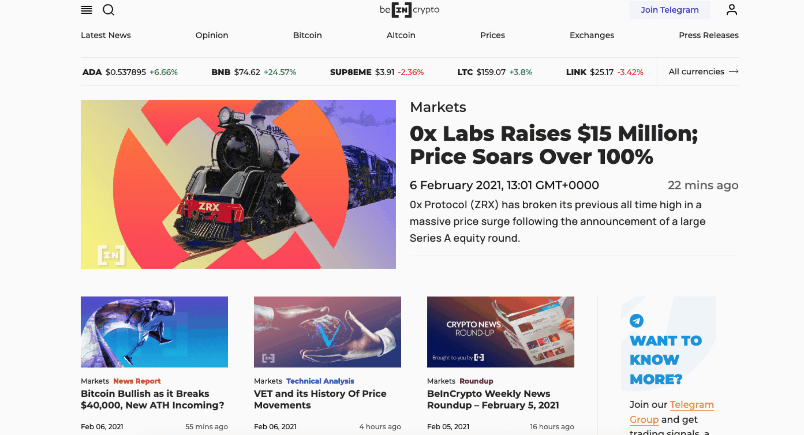
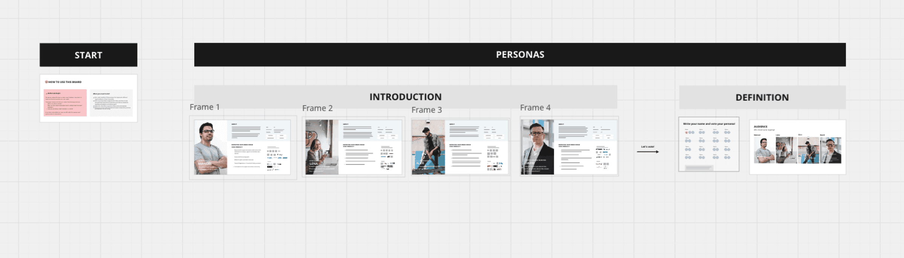
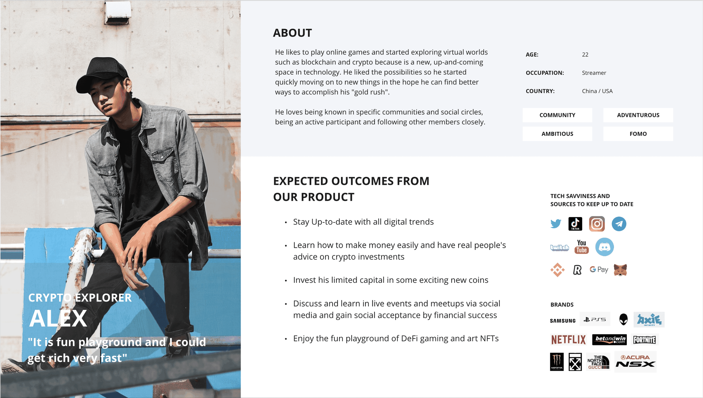
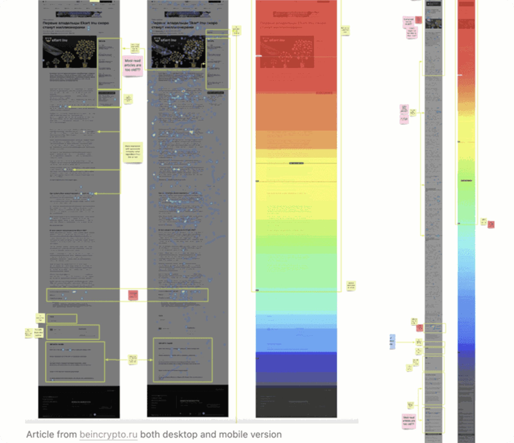
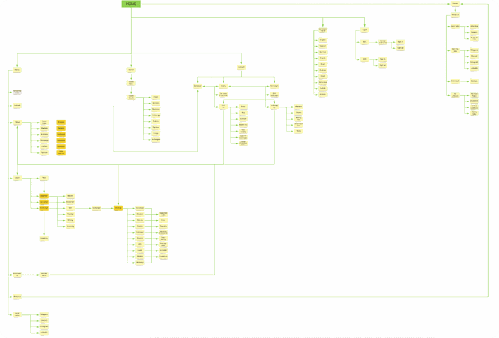
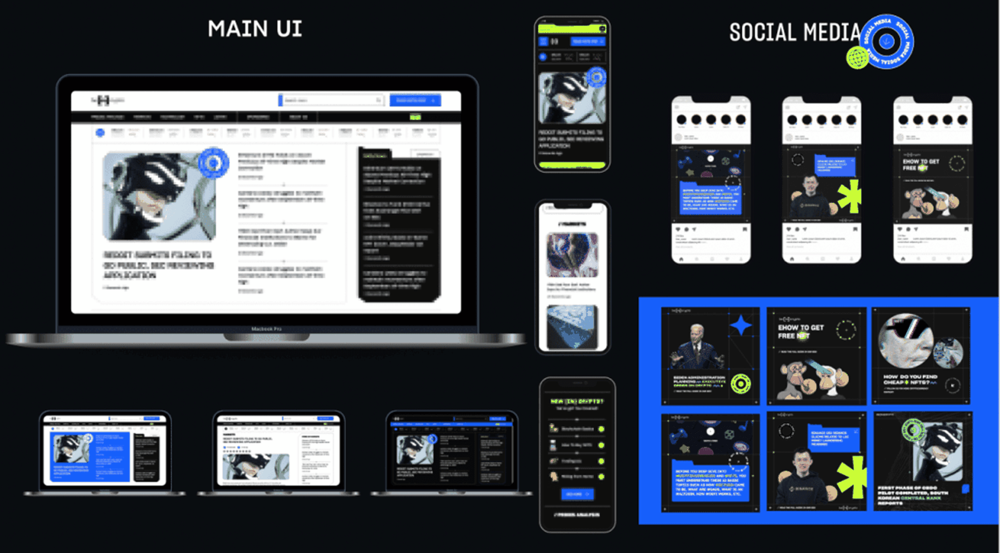
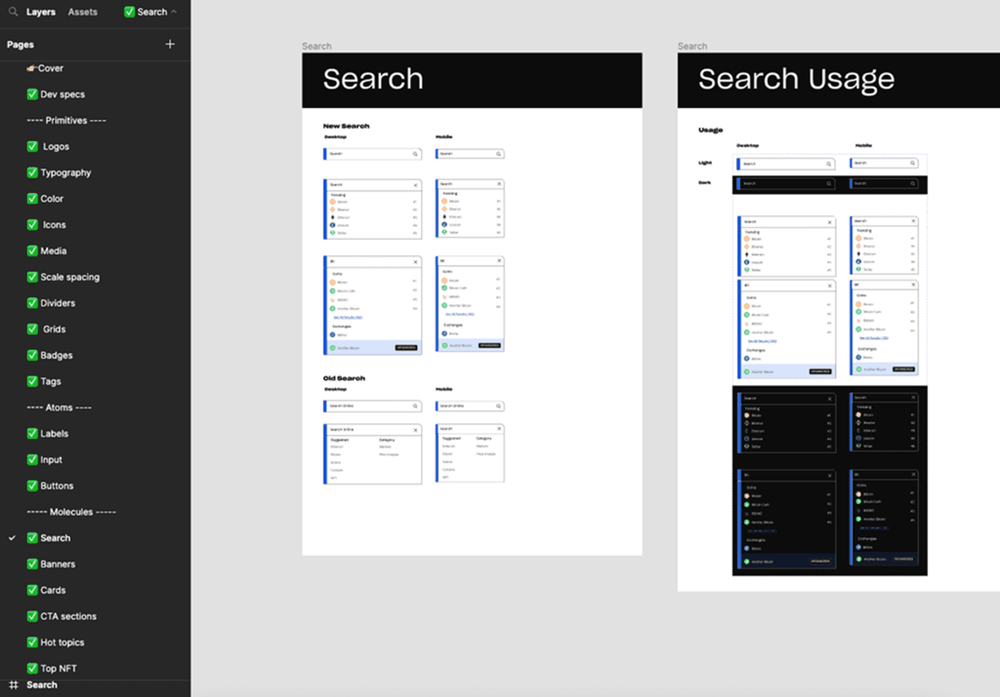
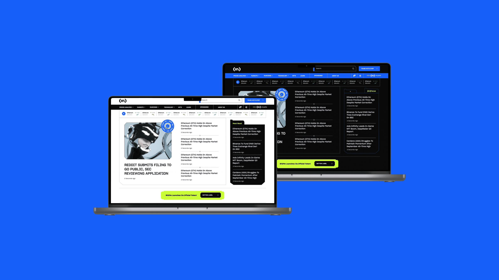
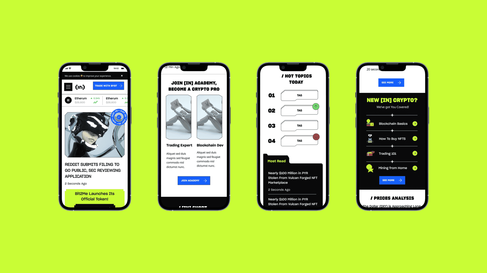

BeInCrypto rebrand
Taking a cluttered, undocumented brand to a clear identity, simpler navigation and its first design system, across 12 languages.

At a glance
The problem
A fast-growing crypto news platform in 12 languages with no brand guidelines, a cluttered site and a 75 to 80% bounce rate.
My role
Design lead: ran leadership workshops, led research (heuristic review, heatmaps, analytics, user testing), the rebrand and the design system, and built the design team.
Impact
Time on page up from about 1 to nearly 3 minutes, drop-off down from 96% to 86%, and the first brand guidelines and design system across 12 languages.
Skills
Tools
Maze
Outcomes
~3x
average time on page, from about 1 to 3 min
10 pts
lower drop-off, from about 96% to 86%
12
languages on one design system
4
personas, one chosen focus
Context
BeInCrypto is a crypto news and education platform published in 12 languages. When I joined, the design and marketing teams were being built from scratch. There was no brand documentation, no guidelines and no shared strategy, and the site was cluttered and hard to navigate.
I led the rebrand end to end, from strategy and research to execution, working with the new marketing team and leadership.

Defining the brand
I ran a series of workshops with leadership to agree on the basics before designing anything:
- Audience and competitors. Young, tech-savvy crypto newcomers, plus investors and professionals. Our strengths were educational content and global reach. Our weaknesses were clutter, weak authority and no clear differentiator.
- Mission and personality. Make crypto knowledge accessible, reliable and engaging, with a voice that's trustworthy but friendly.
- Personas. Four personas, with leadership choosing to focus on Alex, the crypto explorer. I mapped Alex's journey to find drop-offs and pain points.


Research
- Heuristic review. Good multilingual support, but poor structure, brand coherence and visual identity.
- Heatmaps. Readers rarely got past the top of an article, and CTAs got almost no engagement.
- Analytics. 75 to 80% bounce rate, short sessions, under 0.3% CTA conversion.
- Benchmark. Next to Coindesk, The Block and Cointelegraph, we were denser and harder to scan.
- Testing. 30 Maze participants, mostly beginners. Navigation worked, content felt overwhelming, and the brand had no identity.


What I did
I simplified the site into four entry points (News, Learn, Prices, Community), designed scannable article templates and rebalanced ad placements. We explored two visual routes and tested both with users. The winner was gamified and tech-driven, but sharp and readable.
Together with engineering, I built the first design system: type, colour, grids, components and templates for 12 languages, with dark mode.




Results
Moderated testing with 20 participants, most of them complete crypto beginners:
- Drop-off went from about 96% to 86%
- Average time on page went from just over 1 minute to nearly 3
- Category navigation and trend tags tested well. Trading graphs were still hard to read, which became the next thing to fix
Beyond the numbers, the company got its first brand documentation, personas, positioning and a design system to grow on. The biggest lesson for me was that a rebrand in a fast-growing company is as much facilitation as design.
Next project
Primeros Alimentos →